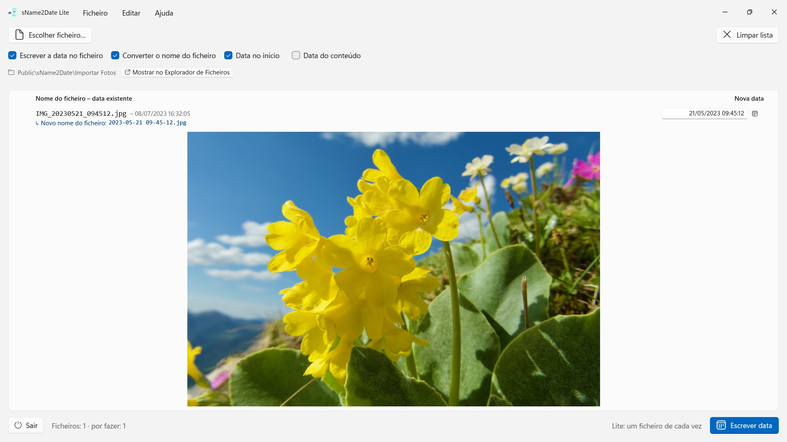
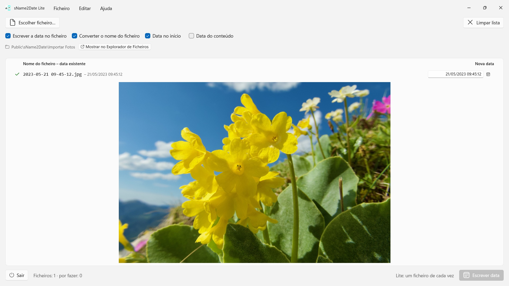

sName2Date Lite
Lê a data do nome do ficheiro — mais de uma dúzia de grafias, nomes de mês no idioma da aplicação e em inglês
Retira a data do nome do ficheiro e escreve-a como data de captura numa fotografia ou num filme — para que o gestor de fotografias e o Explorador de Ficheiros o ordenem corretamente. Um ficheiro de cada vez, gratuito, tudo se anula com Ctrl+Z.


Muitas fotografias e filmes trazem a data no nome do ficheiro, tal como gravações de áudio e documentos como PDF — mas não onde os programas a procuram. Quem recebe uma imagem de uma conversa, de um digitalizador ou de um arquivo antigo fica com um ficheiro como IMG_20240115_103000.jpg, Férias 15.01.2024.jpg ou Fatura 23112024.pdf, que aparece em qualquer gestor de fotografias e no Explorador de Ficheiros com a data de hoje.
O sName2Date lê a data do nome do ficheiro e escreve-a como data de captura dentro do ficheiro. Se ainda não existir nenhuma, é criada. Nos PDF e noutros ficheiros sem data de captura, a app define as datas de criação e modificação do ficheiro. Esta edição processa um ficheiro de cada vez — e com ele faz tudo.
25 idiomas: inglês, alemão, checo, croata, neerlandês, finlandês, francês, húngaro, italiano, japonês, coreano, norueguês bokmål, persa, polaco, português (Brasil e Portugal), romeno, russo, espanhol, sueco, tailandês, turco, ucraniano, chinês (simplificado e tradicional). A aplicação segue o idioma de apresentação do Windows.
GRAFIAS RECONHECIDAS
Data e hora nas formas correntes, entre outras:
- 2024-01-15 10-30-00
- IMG_20240115_103000
- IMG-20240115-WA0001
- 2024-01-15 · 2024 01 15 · 2024_01_15
- 15.01.2024 · 15-01-2024 · 15.01.24 · 15012024
- 15 jan. 2024 · 15 março 2024 · January 15 2024
- 2016 04 · 04-2016 — apenas ano e mês
Os nomes de mês por extenso são lidos no idioma da aplicação e em inglês, tanto na forma longa como na abreviada.
Se o nome trouxer apenas a data, é assumida uma hora; qual delas, é à escolha. Se faltar também o dia, vale o primeiro do mês — e a linha di-lo. Havendo várias datas no nome, ganha a primeira. E onde o dia e o mês fossem permutáveis, a escolha é sua — a predefinição vem do formato regional do Windows, e os ficheiros em causa ficam assinalados, em vez de adivinhados em silêncio.
Se o nome não tiver data alguma, indica-se à direita, na própria linha. Isso alcança até 1826, o ano da fotografia mais antiga que se conservou — imagens digitalizadas do século XIX podem assim ser datadas tal como as de ontem.
O QUE É ALTERADO
São escritos EXIF DateTimeOriginal e DateTimeDigitized, bem como TIFF DateTime; nos filmes e nas gravações de áudio, a data de criação dentro do contentor. Se quiser, também a data de criação e de modificação do próprio ficheiro.
Os dados de imagem ficam intactos: um JPEG não é recomprimido, um filme não é recodificado. Nos filmes e nas gravações de áudio, a aplicação altera em regra apenas alguns bytes no contentor, em vez de o reescrever — mesmo um filme grande fica assim pronto num instante. Depois de escrever, a aplicação volta a ler a data; a cor da linha indica onde ela ficou.
A data de captura fica dentro do próprio ficheiro em JPEG, TIFF e HEIC (com as Extensões de Imagem HEIF da Microsoft), nos formatos de filme MP4, MOV e M4V e nos formatos de áudio M4A e M4B. PNG, GIF, WebP, AVI e fotografias RAW recebem ao lado um ficheiro XMP anexo, que muitos programas de fotografia leem — a linha mostra-o com um visto azul.
TAMBÉM FICHEIROS QUE NÃO PODEM TER DATA DE CAPTURA
Um PDF, um ficheiro de texto, uma folha de cálculo não têm campo algum para uma data de captura — e ainda assim entram na lista. A aplicação define neles a data de criação e de modificação do ficheiro, o único sítio a que a indicação pode chegar; a linha mostra-o com um visto laranja em vez de um verde. Aqui não conta a extensão: PDF, texto, folhas de cálculo, arquivos, tudo.
Se o ficheiro não deve ser tocado, desmarca-se no topo da janela a opção Escrever a data no ficheiro; a aplicação limita-se então a converter o nome.
O NOME JUNTO
Se quiser, a aplicação põe na mesma operação também o nome do ficheiro na grafia ISO: Férias 15.01.2024.jpg passa a 2024-01-15 12-00-00 Férias.jpg. O nome e a data de captura passam a dizer o mesmo.
TUDO SE PODE ANULAR
Uma passagem anula-se por completo com Ctrl+Z — data de captura, marcas temporais do ficheiro e o nome alterado. Ctrl+Y volta a aplicá-la.
MAIS DE UMA VEZ: A VERSÃO COMPLETA sName2Date
A versão completa sName2Date processa uma pasta inteira em vez de um único ficheiro: lê-a, se assim se quiser com todas as subpastas, mostra para cada ficheiro a data encontrada e escreve o lote inteiro numa única operação — mesmo mil fotografias de uma viagem. Se quiser, ignora os ficheiros que já têm uma data de captura.
Para um ficheiro isolado, basta esta edição.
NO SEU PC, E SÓ AÍ
Sem contas, sem nuvem, sem análises, sem publicidade. A aplicação acede apenas aos ficheiros que lhe indicar. Cada idioma com ajuda completa.
- Requer Windows 11 ou posterior
- 24 idiomas
- Suporte: SwiftAppsBavaria@gmx.net
- Política de privacidade do sName2Date